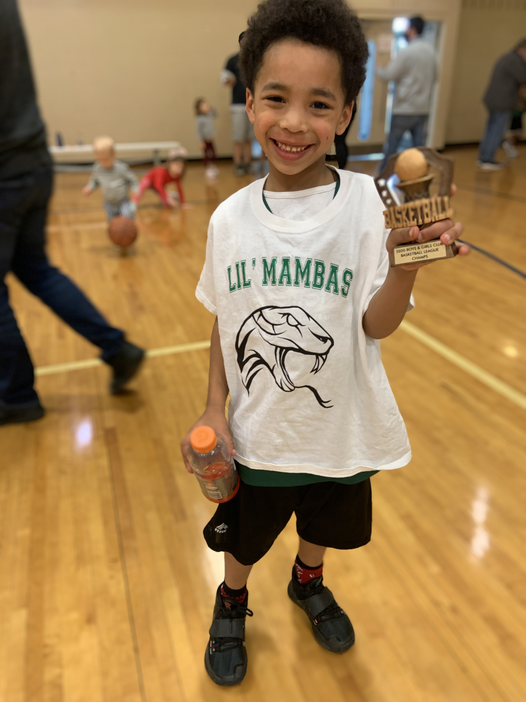
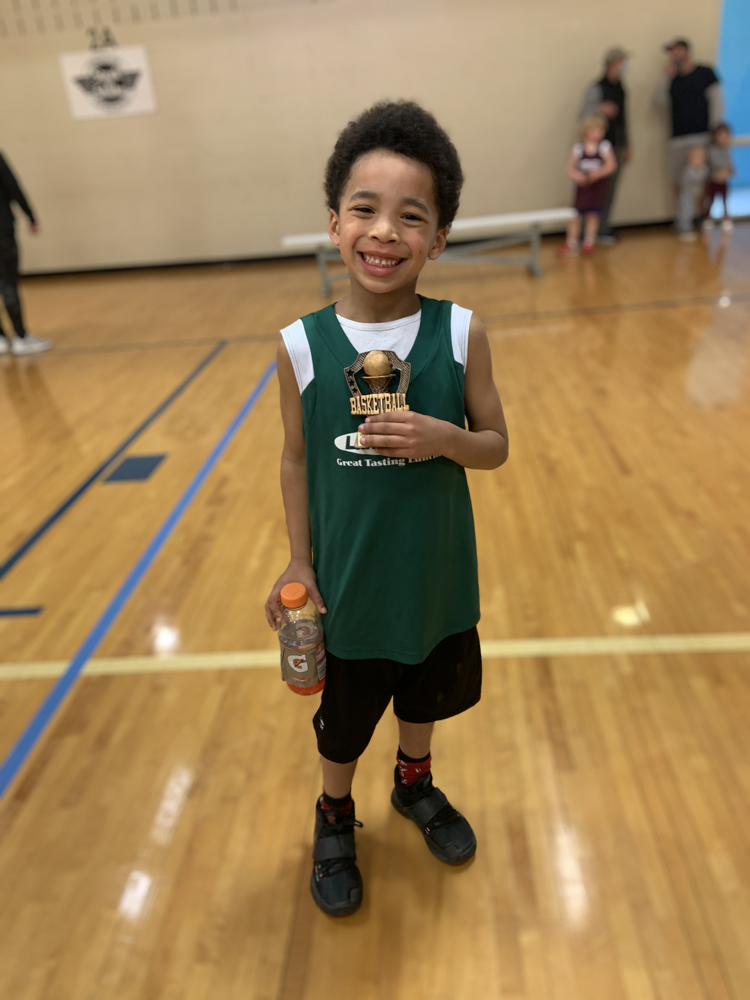
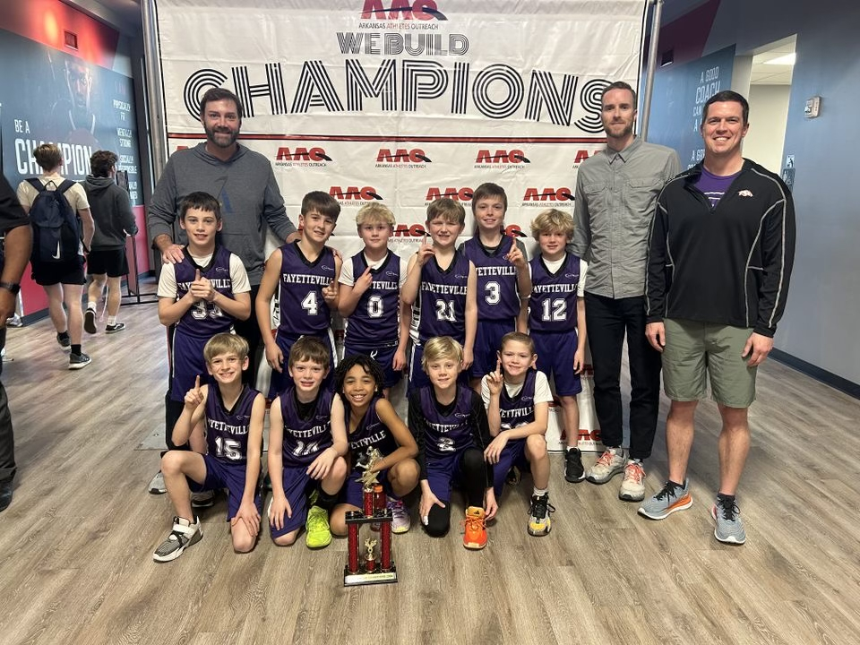
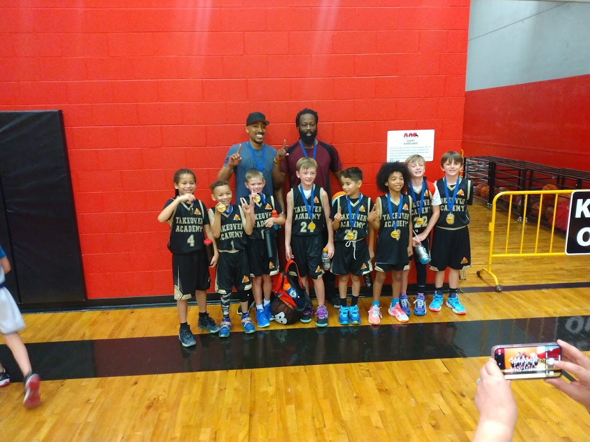

Basketball has been a part of his life from the very beginning. Even before he started school,
you could find him with a ball in his hands, dribbling in the driveway, shooting on a plastic
hoop in the living room, and watching games with wide eyes like he was already studying the sport.
Those early days were filled with endless energy, determination, and a pure love for the game.
By the time most kids were just learning their ABCs, he was already learning how to pass,
dribble, and shoot. That early passion set the foundation for everything he’s accomplished on the court today.
Kindergarden Basketball Beginnings
Even in kindergarten, he was already showing a love for basketball that couldn’t be contained. He practiced layups on the small court, learned to dribble and pass, and quickly picked up the basics of the game. His determination and energy paid off when he earned his very first trophy—an exciting moment that marked the start of a lifelong basketball journey. Holding that trophy, it was clear that this little player had big dreams on the court


Darius' Journey Continues
By 3rd and 4th grade, Darius had already taken a big step forward in his basketball journey. He joined AAO Basketball in Fayetteville, where practices and games pushed him to sharpen his skills and learn what it meant to play at a higher level. During the summers, he hit the court with Takeover Academy, competing in Hardwood Tournaments that gave him a taste of real competition and teamwork on a bigger stage.
These years weren’t just about learning drills; they were about building confidence, handling tough games, and growing into a player who could hold his own against strong opponents. Every tournament, every game, and every practice added another layer to his development and his love for basketball.


AAO Power League Standout
Darius quickly proved himself as more than just a team player. He became a standout in the AAO Power League. Competing against some of the toughest young athletes in the region, he showed consistency, hustle, and skill that set him apart on the court. Whether it was driving hard to the basket, playing smart defense, or keeping his team energized, Darius made his presence known. His time in the Power League not only sharpened his game but also solidified his reputation as a player to watch.